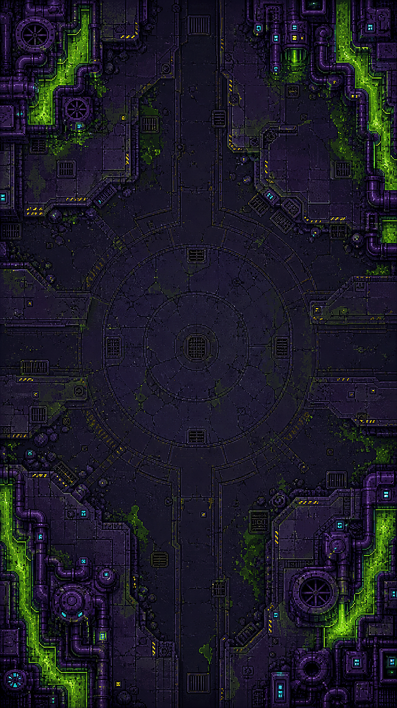

Evidências do trabalho
Recorte visual da Toxic City
O que esta evidência demonstra
Asset real da arena do snapshot verificado do projeto.

Contexto e limites
Asset estático, não captura de gameplay nem prova de qualidade de animação.
Evidências do trabalho
Asset real da arena do snapshot verificado do projeto.

Asset estático, não captura de gameplay nem prova de qualidade de animação.